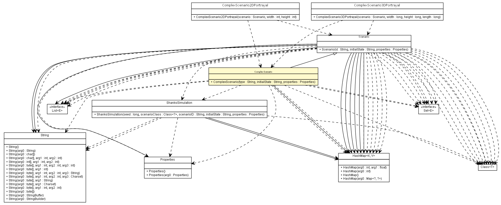

es.upm.dit.gsi.shanks.model.scenario
Class ComplexScenario

java.lang.Object
 es.upm.dit.gsi.shanks.model.scenario.Scenario
es.upm.dit.gsi.shanks.model.scenario.ComplexScenario
es.upm.dit.gsi.shanks.model.scenario.Scenario
es.upm.dit.gsi.shanks.model.scenario.ComplexScenario
public abstract class ComplexScenario
- extends Scenario
- Author:
- a.carrera
| Methods inherited from class es.upm.dit.gsi.shanks.model.scenario.Scenario |
addFailure, addNetworkElement, addNetworkElements, addPossibleEvents, addPossibleEventsOfNE, addPossibleEventsOfNE, addPossibleEventsOfNE, addPossibleEventsOfScenario, addPossibleEventsOfScenario, addPossibleEventsOfScenario, addPossibleFailure, addPossibleFailure, addPossibleFailure, addPossibleFailures, addPossibleStatus, addProperty, createScenario2DPortrayal, createScenario3DPortrayal, createScenarioPortrayal, generateFailures, generateNetworkElementEvents, generateScenarioEvents, getCurrentElements, getCurrentStatus, getFullCurrentFailures, getID, getNetworkElement, getPenaltiesInStatus, getPossibleEventsOfNE, getPossibleEventsOfScenario, getPossibleFailures, getProperties, getProperty, removeFailure, removeNetworkElement, removePorperty, removePossibleFailure, removePossibleStatus, setCurrentStatus, setPossibleStates, setProperties, setupNetworkElementEvent, setupScenarioEvent |
| Methods inherited from class java.lang.Object |
clone, equals, finalize, getClass, hashCode, notify, notifyAll, toString, wait, wait, wait |
ComplexScenario
public ComplexScenario(String type,
String initialState,
Properties properties)
throws ShanksException
- Create a complex scenario to compose the whole scenario adding other
scenarios.
- Parameters:
type - initialState - properties -
- Throws:
UnsupportedNetworkElementFieldException
TooManyConnectionException
UnsupportedScenarioStatusException
DuplicatedIDException
NonGatewayDeviceException
AlreadyConnectedScenarioException
InvocationTargetException
IllegalAccessException
InstantiationException
NoSuchMethodException
IllegalArgumentException
SecurityException
ShanksException
addScenarios
public abstract void addScenarios()
throws ShanksException
- Add all scenarios to the simulation using addScenario method
- Throws:
DuplicatedIDException
UnsupportedScenarioStatusException
TooManyConnectionException
UnsupportedNetworkElementFieldException
AlreadyConnectedScenarioException
NonGatewayDeviceException
InvocationTargetException
IllegalAccessException
InstantiationException
NoSuchMethodException
IllegalArgumentException
SecurityException
ShanksException
addScenario
public void addScenario(Class<? extends Scenario> scenarioClass,
String scenarioID,
String initialState,
Properties properties,
String gatewayDeviceID,
String externalLinkID)
throws ShanksException
- Add the scenario to the complex scenario.
- Parameters:
scenarioClass - scenarioID - initialState - properties - gatewayDeviceID - externalLinkID -
- Throws:
NonGatewayDeviceException
TooManyConnectionException
DuplicatedIDException
AlreadyConnectedScenarioException
SecurityException
NoSuchMethodException
IllegalArgumentException
InstantiationException
IllegalAccessException
InvocationTargetException
ShanksException
getScenarios
public Set<Scenario> getScenarios()
- Returns:
- set of the scenarios that are in the complex scenario
getScenario
public Scenario getScenario(String scenarioID)
throws ShanksException
- Parameters:
scenarioID -
- Returns:
- null if the ComplexScenario does not contains the searched
scenarioID
- Throws:
ScenarioNotFoundException
ShanksException
generateNetworkElementsEvents
public void generateNetworkElementsEvents(ShanksSimulation sim)
throws ShanksException
- Throws:
ShanksException
checkResolvedFailures
public List<Failure> checkResolvedFailures()
- Overrides:
checkResolvedFailures in class Scenario
- Returns:
- resolved failures
getCurrentFailuresByScenario
public HashMap<Scenario,Set<Failure>> getCurrentFailuresByScenario()
- Returns:
- All failures classified by scenario of the complex scenario
getCurrentFailures
public Set<Failure> getCurrentFailures()
- Overrides:
getCurrentFailures in class Scenario
- Returns:
- set of current active failures in the scenario
getCurrentElementsByScenario
public HashMap<Scenario,HashMap<String,NetworkElement>> getCurrentElementsByScenario()
- Returns:
- All elements classified by scenario of the complex scenario
addPossiblesFailuresComplex
public void addPossiblesFailuresComplex()
addPossiblesEventsComplex
public void addPossiblesEventsComplex()
Copyright © 2011-2013 Grupo de Sistemas Inteligentes - Universidad Politécnica de Madrid. All Rights Reserved.